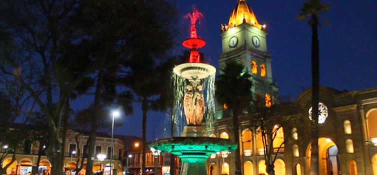
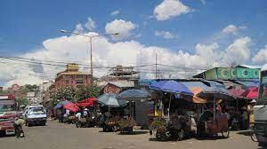
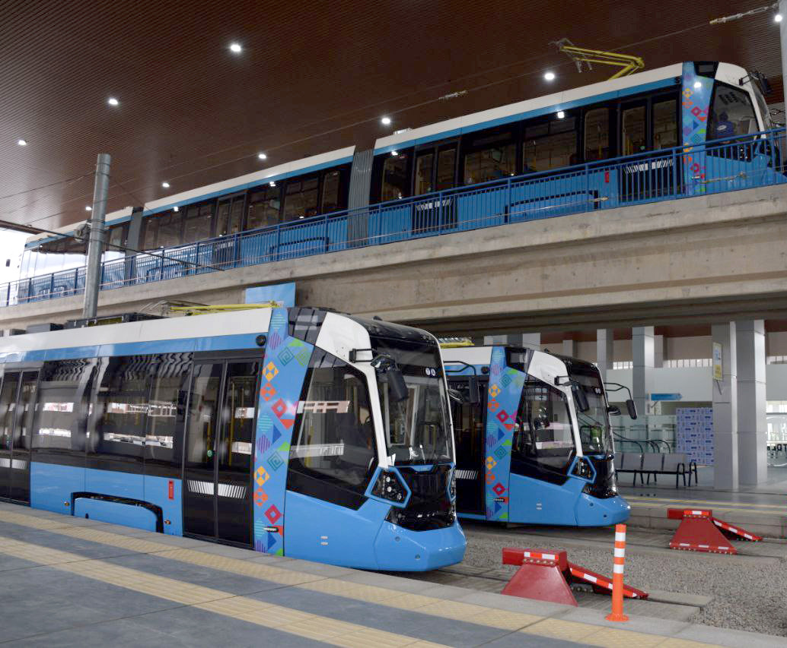

Estos son algunos de los lugares más emblematicos de Cochabamba para Visitar
Cristo de la Concordia
El "Cristo de la Concordia" en Cochabamba, Bolivia, es una imponente estatua que se yergue majestuosamente en la cima de la colina de San Pedro, dominando el paisaje urbano. Con aproximadamente 34.2 metros de altura, esta colosal obra es uno de los Cristos Redentores más grandes del mundo. Ofrece no solo una vista panorámica espectacular de la ciudad y sus alrededores, sino también un espacio de reflexión y espiritualidad en su interior. Su construcción, financiada en gran parte por donaciones de la comunidad local, se completó en 1994, convirtiéndose en un símbolo religioso y cultural emblemático de Cochabamba. Subir hasta la estatua es una experiencia escénica que permite a los visitantes admirar la belleza natural y la riqueza espiritual de esta región boliviana.

Plaza 14 de septiembre
La Plaza 14 de Septiembre, en el centro histórico de Cochabamba, Bolivia, es un enclave lleno de historia y belleza. Rodeada de majestuosos edificios coloniales, esta plaza es un punto de encuentro para locales y visitantes. La impresionante Catedral de San Sebastián se alza en uno de sus lados, añadiendo un toque de grandiosidad a la atmósfera. Es un lugar donde se celebran eventos y festividades importantes, y donde se pueden adquirir artesanías y disfrutar de la gastronomía local. La plaza invita a la relajación en sus áreas sombreadas y es un destino imperdible para quienes deseen experimentar la riqueza cultural y arquitectónica de Cochabamba. 
Mercado "La Cancha"
El Mercado La Cancha es un laberinto de puestos y tiendas que ofrecen una impresionante variedad de productos, desde alimentos frescos, verduras y frutas hasta ropa, artesanías, electrónicos y mucho más. Es un lugar donde los lugareños hacen sus compras diarias y donde los visitantes pueden explorar la riqueza de la cultura boliviana. Además de los productos básicos, el mercado es conocido por su amplia gama de alimentos y platos tradicionales bolivianos, lo que lo convierte en un destino popular para probar la gastronomía local. El Mercado La Cancha es un lugar vibrante y lleno de vida que ofrece una inmersión única en la vida cotidiana de Cochabamba y es un destino imprescindible para aquellos que desean experimentar la autenticidad y la diversidad de la cultura boliviana.
El Tren Metropolitano
El Tren Metropolitano de Cochabamba, también conocido como Mi Tren, es un sistema de tren ligero o tranvía, ubicado en la región metropolitana de Cochabamba, al centro de Bolivia, que une los centros administrativos de Sacaba, Cochabamba, Colcapirhua, Tiquipaya, Quillacollo, Vinto y Sipe Sipe. El 13 de septiembre de 2022 fueron inauguradas las líneas Roja y Verde del Tren Metropolitano de Cochabamba.

Para más información, escríbenos a Whatsapp